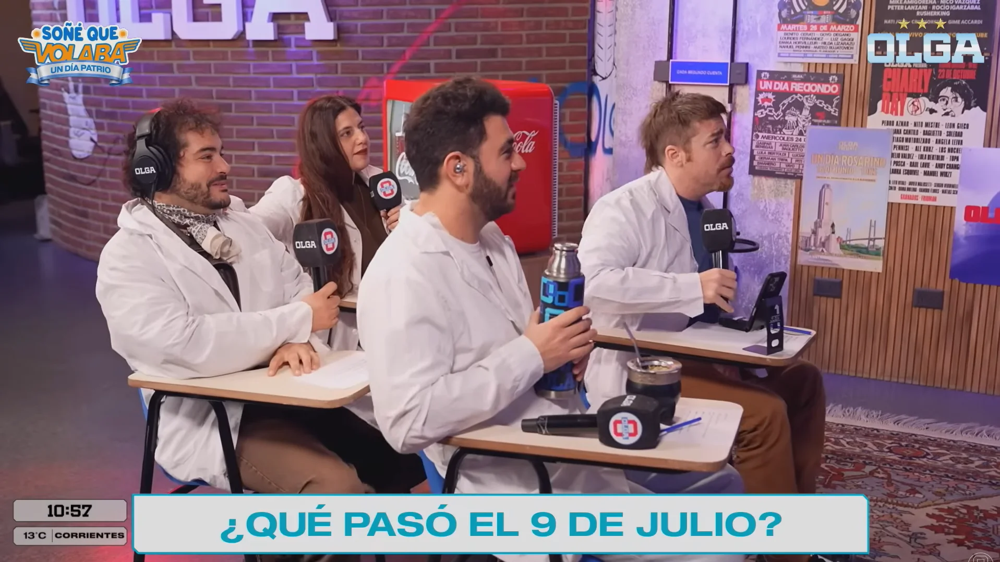
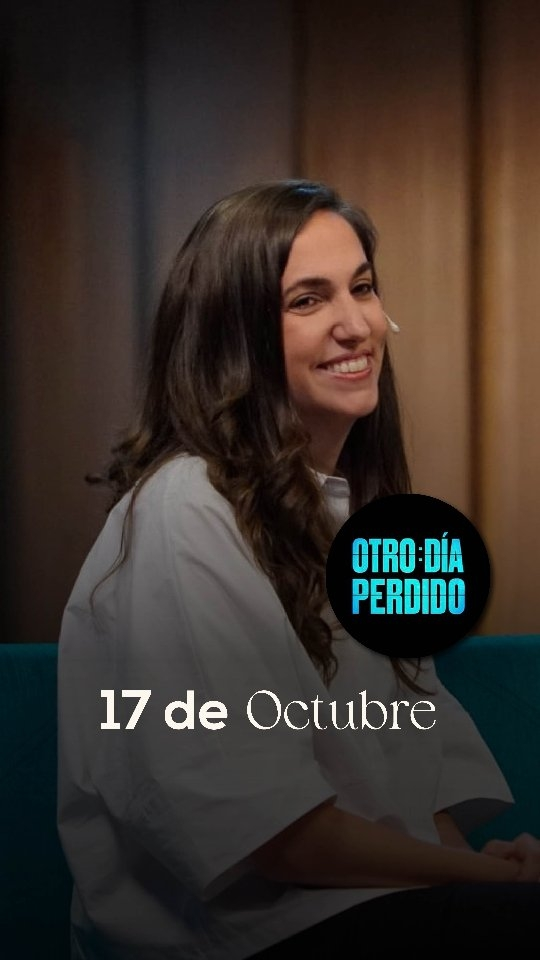
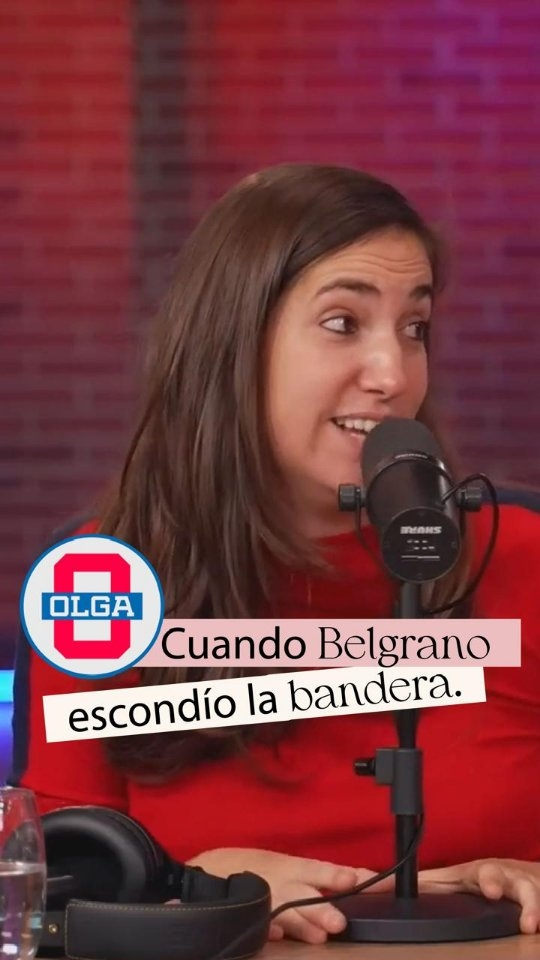
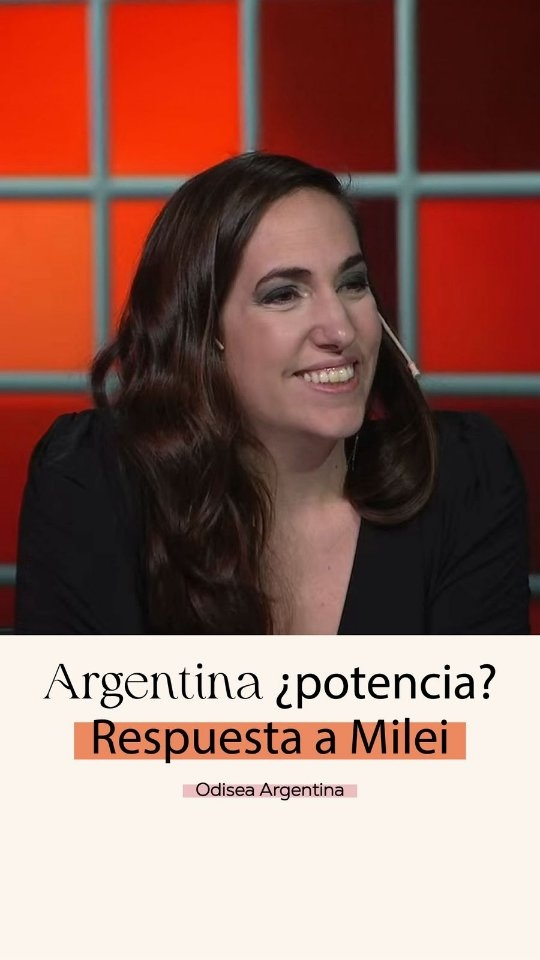
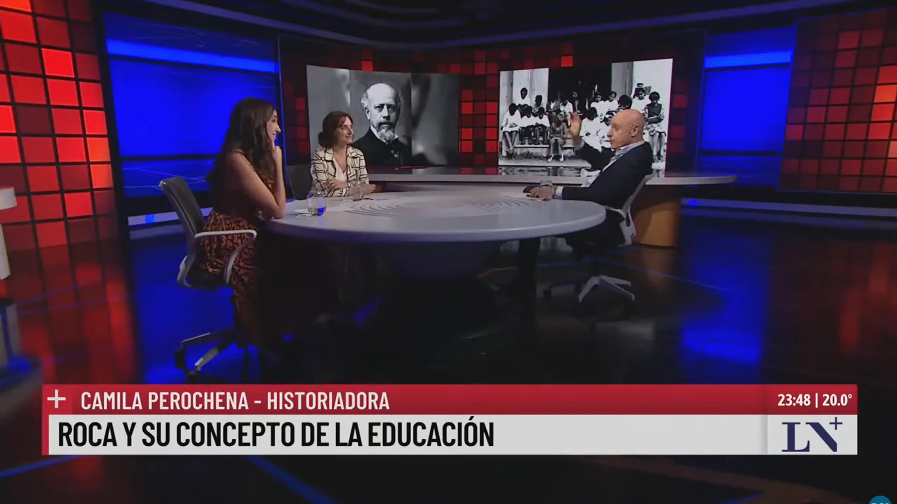

Soñé que volaba
Beiträge zu Geschichte, Politik und aktuellem Geschehen, die später für soziale Medien angepasst wurden.

Schnitt und Anpassung historischer und politischer Inhalte für digitale Plattformen, ausgehend von Auftritten in Streaming-Formaten und im Fernsehen.
Videoschnitt · Auswahl der Inhalte · Formatentwicklung · Plattformübergreifende Anpassung
Camila Perochena ist Historikerin und Kommunikatorin, spezialisiert auf argentinische und Weltgeschichte. Sie tritt regelmäßig in Analyse- und Vermittlungsformaten auf, etwa in Soñé que volaba bei OLGA und in Odisea Argentina mit Carlos Pagni.
Meine Arbeit mit ihr konzentriert sich vor allem auf den Schnitt und die Anpassung dieser Auftritte für digitale Plattformen. Ausgehend von Material, das ursprünglich für Langformate gedacht war, wähle ich Ausschnitte aus, gestalte und schneide sie so, dass sie als eigenständige Stücke funktionieren, ohne den historischen oder argumentativen Kontext zu verlieren.
Auswahl von Beiträgen, geschnitten aus Auftritten in Streaming-Formaten und im Fernsehen.



Beiträge zu Geschichte, Politik und aktuellem Geschehen, die später für soziale Medien angepasst wurden.

Beiträge mit historischer und politischer Analyse, die als Ausgangsmaterial für neue digitale Inhalte dienten.

In längeren Auftritten identifiziere ich Ideen oder Wortwechsel, die als eigenständige Stücke funktionieren können, und bevorzuge dabei, was Sinn und Kontext auch außerhalb des ursprünglichen Gesprächs bewahrt.
Tempo, Schnitte, Untertitel und visuelle Elemente für ein klares, dynamisches Stück, ohne den Sinn des ursprünglichen Auftritts zu verändern.
Ich ordne Ausschnitte aus langen Gesprächen neu und schneide sie zu Stücken mit eigenem Anfang, Entwicklung und Schluss, mit dem Kontext, den es braucht, um für sich zu stehen.
Ich verwandle Auftritte aus Streaming oder Fernsehen in Kurzformate und verdichte sie, ohne das Argument auf einen isolierten Satz zu reduzieren oder relevante Nuancen zu verlieren.
Ich denke jedes Stück von der Umgebung aus, in der es zirkulieren wird — Einstieg, Länge, Bildausschnitt, Tempo, Untertitel —, gestaltet nach der Sprache der Plattform und nicht als einfacher vertikaler Zuschnitt.
Historische und politische Themen verlangen besondere Sorgfalt im Umgang mit Kontext und Argumentation: Ich strebe einen Schnitt an, der zugänglich und ansprechend ist, ohne zu sensationalisieren oder zu vereinfachen, was Komplexität braucht.